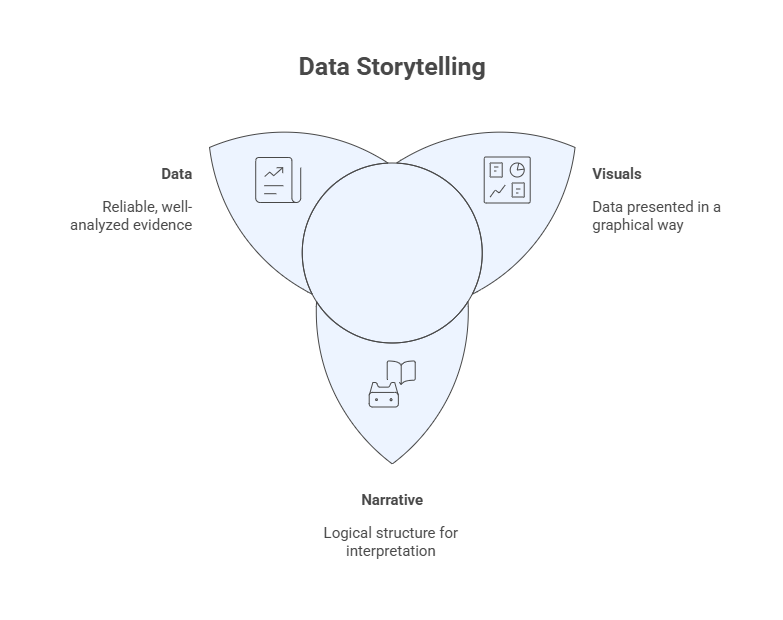
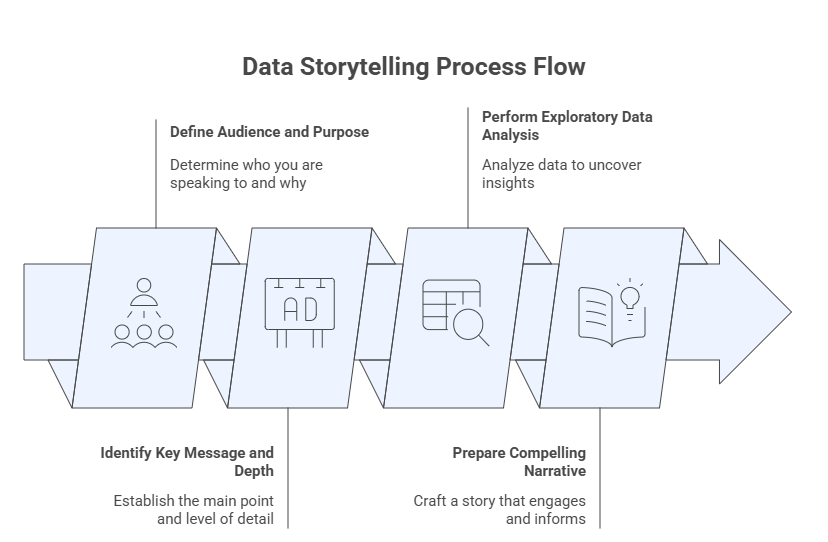

7 — Data Storytelling and Dashboard Design#
This module integrates exploratory data analysis, visualization principles, and communication to transform analytical results into meaningful insights for decision-making. Data storytelling focuses on crafting a coherent narrative grounded in evidence, while dashboard design emphasizes interactive, visual summaries that support monitoring, exploration, and action.
Together, these components represent the culmination of Advanced Exploratory Data Analysis (AEDA): moving from data understanding to insight communication and decision support.
Learning Objectives#
By the end of this module, students will be able to:
Define audience, purpose, and context for data-driven communication.
Identify key analytical messages and appropriate levels of detail.
Structure data stories that combine narrative, evidence, and visualization.
Design dashboards that align visual encodings, layout, and interaction with analytical goals.
Apply best practices for usability, accessibility, and security in dashboards.
Develop an end-to-end data storytelling and dashboard solution using a real dataset.
7.1 Data Storytelling#
Data storytelling is the practice of communicating insights derived from data through a structured narrative supported by appropriate visualizations. It combines three core elements:
Data: reliable, well-analyzed evidence.
Narrative: a logical structure that guides interpretation.
Visualization: visual encodings that reduce cognitive load and emphasize meaning.
Effective data storytelling does not aim to show everything in the data, but rather to highlight what matters for a given audience and purpose.

Figure: Relationship among data, narrative and visuals for the storytelling design process.
7.1.1 Define the Audience and Purpose#
The first step in data storytelling is to clearly define:
Audience: executives, managers, analysts, domain experts, or the general public.
Purpose: inform, explain, persuade, monitor, or support decision-making.
Audience characteristics determine:
Level of technical detail
Choice of metrics and visualizations
Language, tone, and framing
A visualization that works for analysts may overwhelm decision-makers; conversely, oversimplification can obscure critical nuance for technical audiences.

Figure: Data storytelling process flow.
7.1.2 Identify the Key Message and Depth#
A data story should revolve around a small number of key messages derived from exploratory analysis.
Key questions include:
What is the most important insight?
What evidence supports it?
How much detail is necessary for this audience?
Depth should be adjusted by layering information:
High-level summary for quick understanding
Supporting views for deeper exploration
Access to raw or detailed data when needed
7.1.3 Perform the Exploratory Data Analysis#
Robust data storytelling is grounded in rigorous exploratory data analysis. Prior to narrative construction, the analyst should:
Understand distributions, variability, and outliers
Identify associations and trends
Detect anomalies or unexpected patterns
Validate data quality and assumptions
EDA ensures that the story is evidence-based, not anecdotal, and helps prevent misleading conclusions.
7.1.4 Prepare a Compelling Narrative#
A compelling data narrative typically follows a logical structure, such as:
Context: why the problem matters
Question: what is being investigated
Evidence: key findings supported by data and visuals
Insight: interpretation of results
Implications: recommended actions or decisions
Narratives should be concise, focused, and aligned with the analytical goal. Visualizations should be integrated naturally into the story, reinforcing—rather than distracting from—the message.
The table below brings together the four core principles of storytelling design: defining the audience and purpose, identifying the central message and appropriate level of detail, conducting the exploratory data analysis, and crafting a compelling narrative. Once these elements are established, the analyst is prepared to proceed with the planning and design of the dashboard.
Table: Matrix with the four storytelling design principles.
Audience and Purpose |
Exploratory Analysis |
|---|---|
• Specific group or individuals: demographics, interests, and knowledge level. |
• What questions do you want to answer with the data? |
Key Message and Depth |
Compelling Narrative |
• Central theme or insight: clear, concise, and relevant. |
• Persuasive and impactful presentation. |
7.2 Dashboard Design#
A dashboard is an interactive visual interface that consolidates key indicators, trends, and patterns into a single view. Dashboards are widely used for monitoring performance, supporting decisions, crafting stories, and enabling exploratory analysis.
Unlike static reports, dashboards emphasize:
Interactivity
Real-time or near–real-time updates
User-driven exploration
The figure below summarizes the main steps involved in the process of designing dashboards.
 Figure: Dashboard design process flow.
Figure: Dashboard design process flow.
7.2.1 Selecting Appropriate Visualizations#
Visualization choices in dashboards should follow the same principles discussed in earlier modules:
Match visualization type to data type and analytical goal
Prefer simple, familiar charts for frequent monitoring
Avoid unnecessary decoration or chart variety
Common dashboard elements include:
KPIs and summary metrics
Time series for trends
Bar charts for comparisons
Maps for spatial patterns
7.2.2 Designing the Dashboard Layout#
Layout strongly influences usability and comprehension. Effective layouts:
Follow a clear visual hierarchy (most important elements first)
Use consistent alignment and spacing
Group related elements logically
Minimize scrolling when possible
A common strategy is a top-down layout, where high-level KPIs appear at the top and detailed views appear below.
7.2.3 Choosing a Color Scheme#
Color should be used intentionally and sparingly. Good practices include:
Use color to encode meaning, not decoration
Maintain consistency across views
Ensure sufficient contrast for readability
Consider color-blind–safe palettes
Neutral colors are often preferable for backgrounds, while accent colors can highlight critical values, changes, or exceptions.
7.2.4 Applying Interactivity#
Interactivity allows users to explore data dynamically. Common interactive features include:
Filters and slicers
Drill-down and drill-through actions
Tooltips with additional context
Linked views (brushing and highlighting)
Interactivity should enhance insight, not overwhelm the user. Each interactive element should have a clear purpose.
7.2.5 Security and Access Control#
Dashboards often expose sensitive or strategic information. Key considerations include:
Role-based access control
Data anonymization when appropriate
Secure authentication and authorization
Compliance with organizational and legal requirements
Security should be addressed early in the design process, not as an afterthought.
7.2.6 Test and Iterate#
Dashboard design is inherently iterative. Testing should involve:
Real users from the target audience
Representative tasks and scenarios
Feedback on clarity, usability, and usefulness
Continuous iteration ensures that dashboards remain aligned with evolving data, goals, and user needs.
7.3 Case Study: Superstore Sales Dataset#
This case study integrates data storytelling and dashboard design using the Superstore Sales dataset, a widely used benchmark in business analytics.
The dataset typically includes:
Orders, customers, products, and categories
Sales, profit, discounts, and quantities
Temporal and geographic dimensions
7.3.1 Data Storytelling#
The storytelling process begins by defining the business questions, such as:
How are sales and profits evolving over time?
Which regions and categories drive performance?
Where are losses occurring?
Exploratory analysis is used to identify trends, patterns, and anomalies, which are then synthesized into a coherent narrative tailored to decision-makers.
7.3.2 Dashboard Design#
The dashboard design phase translates the story into an interactive interface, typically including:
High-level KPIs (total sales, profit, margin)
Time series views for trends
Comparative views by region, category, and segment
Filters for time, geography, and product attributes
The final dashboard serves both as a communication artifact and a decision-support tool, allowing users to monitor performance and explore underlying drivers.
To illustrate, the wireframe presented in the figure below describes the layout to be used to build the dashboard.

Figure: Wireframe with the dashboad layout for the Superstore Sales dataset.
The figure below shows the final dashboard built using PowerBI by Microsoft.

Figure: Dashboad for the Superstore Sales dataset created with PowerBI by Microsoft.
Reflection#
Who is the intended audience for your data story, and how does this influence visualization and narrative choices?
How do you balance simplicity and completeness when communicating insights?
In what ways can interactivity strengthen—or weaken—a data story?
How does dashboard design differ when the goal is monitoring versus exploration?
What ethical or security considerations arise when sharing analytical dashboards?
Further Reading#
Students are encouraged to consult the bibliography listed in the course syllabus, particularly:
De Castro, L. N. (2026). Exploratory Data Analysis: Descriptive Analysis, Visualization, and Dashboard Design. CRC Press.
Knaflic, C. N. (2015). Storytelling with Data: A Data Visualization Guide for Business Professionals. Wiley.
Ward, M., Grinstein, G. G., & Keim, D. (2015). Interactive Data Visualization. CRC Press.
Wilke, C. O. (2019). Fundamentals of Data Visualization. O’Reilly Media.